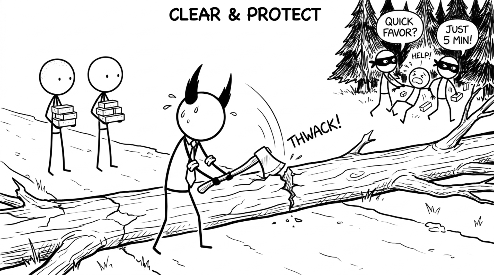

<section id="clear-road" data-transition="fade" style="display:flex; align-items:center; justify-content:center; padding:0; background:#fcfcfa">

<p style="position:absolute;left:0;bottom:10px;width:1920px;margin:0;text-align:center;font-family:'Patrick Hand', 'Trebuchet MS', sans-serif;font-size:22px;color:#8a8f98">Copyright Dobromir Montauk 2026</p>
<aside><b>Clear &amp; Protect.</b> Two kinds of obstacles.<br>Blockers you can see: waiting on another team's API, missing access or credentials, a flaky CI pipeline, a decision nobody has made. Chasing these down is visible and feels great.<br>Distractions you don't see: the "quick favor" from sales, the exec who needs "just 5 minutes" every day, an extra interview loop, the side project someone pulled your engineer into. They take your best people one at a time.<br>Ask in 1:1s where their time actually went last week, and compare it to the plan. Then say no on their behalf.</aside>
</section>
